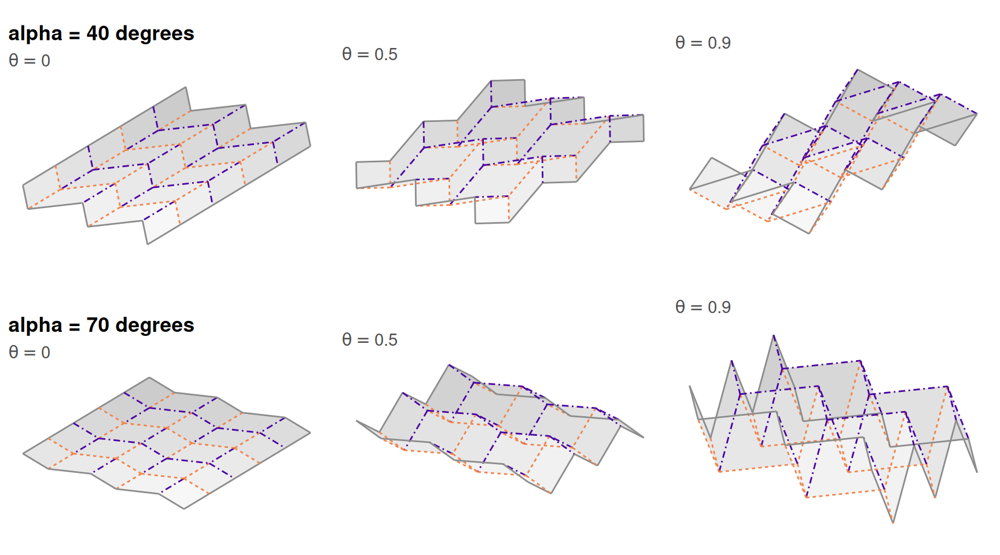
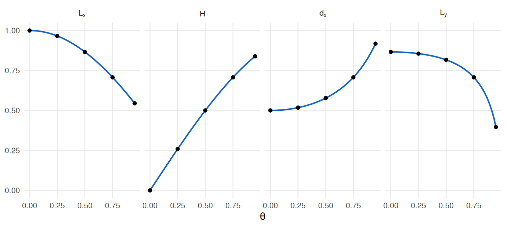
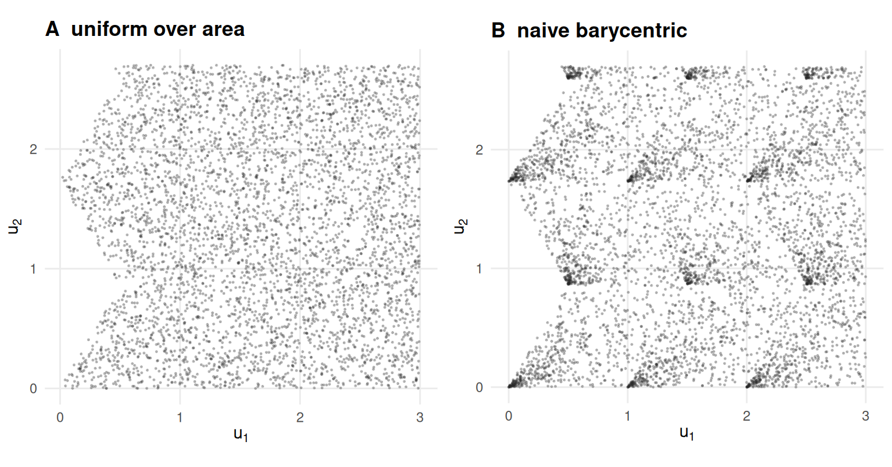
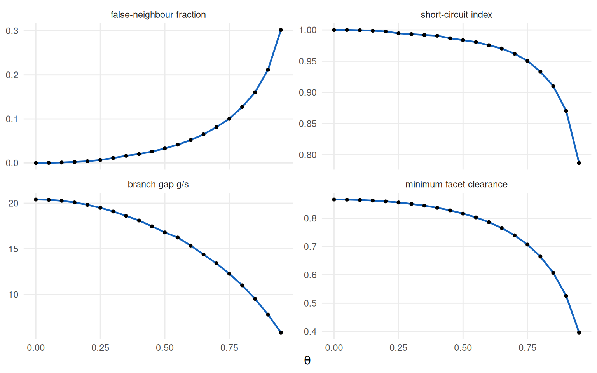
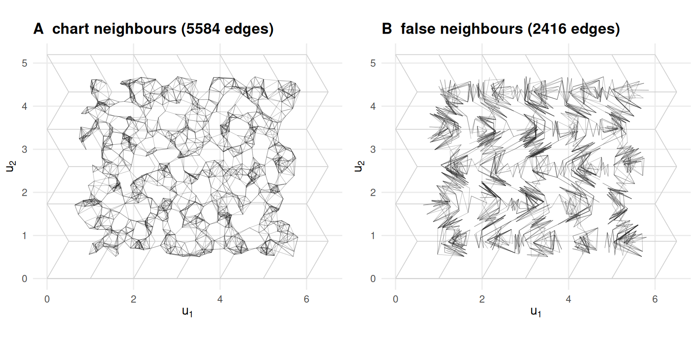

3 Folding as a generative model
How do you turn one pattern into a family of test problems?
3.1 What this chapter answers
Chapter 2 established one object: a crease pattern whose flat chart is its exact two-dimensional structure. One object is not a benchmark. A benchmark is a family of problems ordered by difficulty, and this chapter is where the single sheet becomes that family.
The generative model has four scalars and three switches. Three of the scalars — the cell sides \(a\) and \(b\) and the acute angle \(\alpha\) — fix the chart. The fourth, \(\theta\), moves the sheet through space and does not touch the chart at all. The switches are the sample size, the noise model and the seed. Every row of every artefact this book ships is one setting of those seven things, and every curve in Parts II and III is a sweep over the fourth scalar with the other six held.
This chapter is the reference for that model. It derives the folded placement in closed form and verifies the derivation here rather than citing one; it says exactly how points are drawn and what a careless draw would do to the density; it names the three noise models and no others; and it measures what \(\theta\) does to the \(k\)-nearest-neighbour graph a method actually consumes. Chapter 8 builds constructions on top of this model, and every chapter from 4 onward reads an artefact produced by it.
3.2 Setup
p <- miura_ori(nx = 6L, ny = 6L, a = 1, b = 1, alpha = pi / 3)
th <- max(THETA_GRID)
s <- sample_manifold(p, theta = th, n = N_DEFAULT, seed = 1001L)p is the pattern the benchmark grid uses — PATTERN_GRID names its size and
R/constants.R explains why there is one entry — th the largest fold the grid
reaches, and s a sample of 800 points drawn from the sheet at that
fold. Nothing in this chapter reads a committed artefact; every number below is
computed while the page is built. The notation appendix fixes the
symbols.
3.3 Background
Dimension reduction is usually benchmarked against a collection: a fixed list of datasets, some real and some synthetic, each scored once and averaged over (4). The synthetic members of such a collection — the Swiss roll, the S-curve, the severed sphere — are already generative in the weak sense that they come with a parameterisation, so a ground-truth chart exists (6,12). What they mostly lack is a knob: a continuous parameter that makes the same problem harder while leaving the answer exactly where it was.
A generative model that can carry a benchmark has to supply four things.
An exact chart. Not a low-dimensional summary that scores well, but the coordinates the data were generated from. A rigid folding gives this for free, which is the whole reason the book uses one.
A difficulty axis that moves the ambient geometry and nothing else. Folding moves every point in \(\mathbb{R}^3\) and moves no point of the chart. That is the property \(\theta\) has and a dataset collection does not: two cells of the grid can differ in difficulty while their answer keys are literally the same matrix.
A noise model that is not confounded with the axis. This one is easy to get wrong. A noise scale keyed to the folded object would shrink as the sheet closes, so a fixed setting would become a rising noise level along the \(\theta\) sweep and the two axes could not be separated afterwards. The scale here is a fraction of the chart diameter, which does not move.
A seed, and a sampler that respects it. Every stochastic result in this book is reported across 20 seeds (standing rule 1), which requires a sampler whose draw is a function of its seed and whose call does not disturb the caller’s random stream.
One thing the model cannot supply is a sampling guarantee. The theory that says
how many points are enough to recover a submanifold is stated in terms of its
reach (16), and Chapter 2 established
that a crease has reach exactly zero. Nothing here is covered by that theory, so
sampling adequacy is measured on every sample instead — which is what
gen-results does.
3.4 The Miura-ori in four scalars
Four scalars go in and four come out, and the two sets are not the same four.
Going in are \(a\), \(b\), \(\alpha\) and \(\theta\). The first three fix the flat pattern: vertex \((i, j)\) of the tessellation sits at
\[x = i\,a + (j \bmod 2)\, b \cos\alpha, \qquad y = j\, b \sin\alpha,\]
which is Miura’s parallelogram tessellation (5) and is all of
miura_ori(). The counts \(n_x\) and \(n_y\) set how many cells there are, not what
shape they have. \(\theta\) appears nowhere in that expression, and that absence is
the model’s load-bearing property.
Coming out are the four metric constants of the folded placement. Chapter 2 derived them; the derivation is repeated here in one line because this chapter is where a reader is sent to find it. Posit a folded placement of the same combinatorial form,
\[x = i L_x + (j \bmod 2)\, d_x, \qquad y = j L_y, \qquad z = (i \bmod 2)\, H,\]
and impose isometry on one facet. Its two side vectors are \(e_1 = (L_x, 0, \pm H)\) of flat length \(a\) and \(e_2 = (\pm d_x, L_y, 0)\) of flat length \(b\), so preserving both lengths and the angle between them gives
\[L_x^2 + H^2 = a^2, \qquad d_x^2 + L_y^2 = b^2, \qquad L_x d_x = ab\cos\alpha .\]
Three equations, four unknowns, one free parameter. Writing \(L_x = a\cos\varphi\)
and \(H = a\sin\varphi\) solves the first identically and leaves
\(d_x = b\cos\alpha/\cos\varphi\) and
\(L_y = b\sqrt{1 - \cos^2\alpha/\cos^2\varphi}\). That \(L_y\) is real only while
\(\varphi \le \alpha\) and vanishes at \(\varphi = \alpha\), which is the
flat-folded state — so \(\varphi\) runs on \([0, \alpha]\) and \(\theta = \varphi/\alpha\)
is the normalised parameter fold() takes.
3.4.1 The derivation, checked
Those three conditions are what the placement was built to satisfy, so testing
them on the formula would be circular. What is not circular is reading the four
constants back out of the coordinates fold() returns and testing the
conditions on those.
scalars_of <- function(pattern, theta) {
r <- pattern$params
vid <- function(i, j) j * (r$nx + 1L) + i + 1L # (i, j) -> vertex row
V <- unname(fold(pattern, theta)$vertices3)
c(Lx = V[vid(1L, 0L), 1L] - V[vid(0L, 0L), 1L],
H = V[vid(1L, 0L), 3L] - V[vid(0L, 0L), 3L],
dx = V[vid(0L, 1L), 1L] - V[vid(0L, 0L), 1L],
Ly = V[vid(0L, 1L), 2L] - V[vid(0L, 0L), 2L])
}
conditions <- function(pattern, theta) {
r <- pattern$params
z <- scalars_of(pattern, theta)
c(z[["Lx"]]^2 + z[["H"]]^2 - r$a^2,
z[["dx"]]^2 + z[["Ly"]]^2 - r$b^2,
z[["Lx"]] * z[["dx"]] - r$a * r$b * cos(r$alpha))
}
alphas <- seq(MIURA_ALPHA_RANGE[1], MIURA_ALPHA_RANGE[2], length.out = 14L)
worst <- max(vapply(alphas, function(A) {
pa <- miura_ori(4L, 4L, a = 1, b = 1.3, alpha = A)
max(abs(vapply(THETA_GRID, function(t) conditions(pa, t), numeric(3))))
}, numeric(1)))
ends <- rbind(flat = scalars_of(p, 0), folded = scalars_of(p, 1))Over fourteen opening angles spanning MIURA_ALPHA_RANGE and the whole
\(\theta\) grid, the worst violation of any of the three conditions is
6.7e-16 — floating-point noise on a
closed form, not a solver tolerance. The endpoints behave too: at \(\theta = 0\)
the four constants are
1, 0, 0.5, 0.866, which is the flat pattern
recovered exactly rather than in a limit, and at \(\theta = 1\) they are
0.5, 0.866, 1, 0 — \(L_y\) has gone to zero
and the sheet has no extent in \(y\) at all.
The four constants also say what folding does to the sheet as an object. \(L_x\) and \(L_y\) both fall while \(H\) and \(d_x\) rise, so the sheet’s overall extent shrinks in both in-plane directions at once while it gains depth in the third — the auxetic behaviour the Miura is usually presented for, arriving here as a consequence of the three conditions rather than as a design goal. Nothing else in the model depends on \(n_x\) and \(n_y\) beyond the count of cells: a larger tessellation is a larger sheet made of the same cell, which is why crease count is a difficulty knob in its own right and is swept separately rather than folded into \(\theta\).
This derivation is not quoted from anywhere. Schenk
and Guest (20) give
unit-cell quantities for the Miura under a different angle convention,
and their parameterisation and this one are related work rather than
the same statement. No map between the two is asserted here,
because none has been verified in this repository, and a reconciliation
asserted without one would be exactly the citation-by-osmosis this book
is trying to avoid. The algebra above stands on the check in
gen-scalars and on
tests/testthat/test-folding.R, and on nothing else.

Figure 3.1: The generative family. Rows are two opening angles \(\alpha\); columns are three values of the folding parameter. The chart differs between rows and is identical along each row: \(\theta\) moves the sheet and never the answer key.
Figure 3.1 is the family. Reading down a column changes the chart; reading across a row does not change it by one coordinate. A benchmark cell is a position in that array.

Figure 3.2: The four metric constants of the folded placement against the folding parameter, for the pattern of gen-setup. Lines are the closed form; points are the same constants read back out of the coordinates fold() returns.
Figure 3.2 is the one-parameter family written out. Two
features of it matter downstream. The constants are smooth and monotone in
\(\theta\), so difficulty is ordered; and they are markedly not linear in it, so
the last fifth of the sweep does most of the geometric work. Both facts turn up
again in gen-results.
3.5 Sampling and noise
The chart is the sample space. sample_manifold() draws points in the flat
pattern, records them as truth, and carries each one into \(\mathbb{R}^3\)
through the rigid motion of the facet it landed on to give X. The two matrices
are the same points seen twice, and nothing is interpolated between folded
vertices — the per-facet map is built from a frame and then checked against the
corners, so a folding that stopped being rigid would fail rather than quietly
return positions no point of the surface occupies.
Drawing in the chart means drawing uniformly over area, and that is where a
naive implementation goes wrong. .fan_triangles() splits every facet into a
fan from its first vertex and returns the area of each triangle; the fan is
checked rather than assumed, since it tiles a convex polygon and not a
re-entrant one. .draw_chart_points() then picks a triangle with probability
proportional to its area and maps a pair of uniforms into it — with a square
root on the first.
tri <- .fan_triangles(p$vertices, p$facets) # internal: see R/sampling.R
draw_chart <- function(m, root) { # root = FALSE is the naive draw
k <- sample.int(nrow(tri$idx), m, replace = TRUE, prob = tri$area)
va <- p$vertices[tri$idx[k, 1L], ]
vb <- p$vertices[tri$idx[k, 2L], ]
vc <- p$vertices[tri$idx[k, 3L], ]
r1 <- stats::runif(m); if (root) r1 <- sqrt(r1)
r2 <- stats::runif(m)
list(u = (1 - r1) * va + (r1 * (1 - r2)) * vb + (r1 * r2) * vc, r1 = r1)
}
cell_cv <- function(u, bins = 36L) {
n <- as.vector(table(cut(u[, 1L], bins), cut(u[, 2L], bins)))
stats::sd(n[n > 0L]) / mean(n[n > 0L])
}
set.seed(7L)
good <- draw_chart(20000L, root = TRUE)
bad <- draw_chart(20000L, root = FALSE)
apex <- c(area = mean(good$r1 <= 0.5), naive = mean(bad$r1 <= 0.5))
cv <- c(area = cell_cv(good$u), naive = cell_cv(bad$u))
area_spread <- diff(range(tri$area)) / mean(tri$area)Without the square root, the radial coordinate is uniform where the area element is not: the fraction of a triangle within half-scale of its apex is one quarter by area, and the naive draw puts 0.502 of its points there against 0.251 for the corrected one. The apex of every fan is a vertex of the crease pattern, so the naive draw piles density onto exactly the features the benchmark is about. Counted on a square grid over the chart, the cell-count coefficient of variation is 0.855 against 0.283 — a density gradient roughly 3 times as strong, and every neighbourhood metric in Part II reads a density gradient as structure.
The area weighting itself is a different correction and on this family it does
nothing: every Miura facet is congruent, so the spread of triangle areas is
1.2e-15, and area-proportional
and facet-uniform draws coincide. That is a fact about the pattern, not about the sampler, and it is
listed in gen-limits as something this book does not test.

Figure 3.3: The same triangles, drawn from twice. Panel A is the sampler’s draw, uniform over area. Panel B is the naive barycentric draw without the square root, which concentrates points at the fan apex of every triangle — that is, at the crease-pattern vertices.
boundary = FALSE, which is the default and what every committed artefact uses,
keeps only points at least half a median crease length from the sheet edge, by
rejection from the same uniform draw. Rejection rather than re-triangulation is
deliberate: survivors of a uniform draw are uniform over whatever region
survives, however awkward its shape.
Then noise, and there are exactly three models. "none" leaves X alone.
"ambient" adds isotropic Gaussian displacement in \(\mathbb{R}^3\), applied
after folding so that it moves points off the surface. "outlier" throws a
fixed fraction of the points a fixed distance off it. There is no on-manifold
noise model: displacement inside the chart is a reparameterisation of the same
surface rather than measurement error, and sample_manifold() rejects any type
it does not know.
NOISE <- list(none = list(type = "none", sd = 0),
ambient = list(type = "ambient", sd = 0.02),
outlier = list(type = "outlier", sd = 0.05))
theta_lo <- THETA_GRID[3L]
theta_hi <- THETA_GRID[19L]
noise_at <- function(theta) {
base <- sample_manifold(p, theta, N_DEFAULT, seed = 1001L)
do.call(rbind, lapply(names(NOISE), function(nm) {
z <- sample_manifold(p, theta, N_DEFAULT, noise = NOISE[[nm]], seed = 1001L)
d <- sqrt(rowSums((z$X - base$X)^2))
data.frame(theta = theta, noise = nm, moved = sum(d > 0),
rms = sqrt(mean(d^2)), worst = max(d),
truth_fixed = identical(z$truth, base$truth),
extent = max(stats::dist(base$X)))
}))
}
nz <- rbind(noise_at(theta_lo), noise_at(theta_hi))
set.seed(11L); before <- stats::runif(1)
set.seed(11L); invisible(sample_manifold(p, th, 200L, seed = 5L))
after <- stats::runif(1)
stream_kept <- identical(before, after)The ambient row moves all 800 points; the
outlier row moves 40 of them, by exactly
3.97 each, which is half the chart
diameter. truth is byte-identical to the clean draw in every row — the answer
key does not move when the data get worse.
3.6 Results: what theta does
\(\theta\) changes no chart coordinate. What it changes is the graph a method builds before it does anything else.
k <- K_DEFAULT
graph_at <- function(theta, n = N_DEFAULT, seed = 1001L, pattern = p) {
z <- sample_manifold(pattern, theta, n, seed = seed)
dA <- as.matrix(stats::dist(z$X)); diag(dA) <- Inf
dU <- as.matrix(stats::dist(z$truth)); diag(dU) <- Inf
nn <- t(apply(dA, 1L, function(r) order(r)[seq_len(k)]))
rk <- t(apply(dU, 1L, rank, ties.method = "first"))
i <- rep(seq_len(n), k)
j <- as.vector(nn)
list(sample = z, i = i, j = j, chart_rank = rk[cbind(i, j)])
}
sweep_theta <- do.call(rbind, lapply(THETA_GRID, function(t) {
g <- graph_at(t)
data.frame(theta = t,
false_nb = mean(g$chart_rank > k),
worst_rank = max(g$chart_rank),
sci = short_circuit_index(g$sample),
gs = branch_gap(g$sample)$ratio,
clearance = facet_gap(p, t)$gap)
}))
top <- graph_at(th)
U <- top$sample$truth
fls <- top$chart_rank > k
fcol <- (top$sample$facet - 1L) %% p$params$nx # facet column and row
frow <- (top$sample$facet - 1L) %/% p$params$nx
wider <- abs(U[top$i, 1L] - U[top$j, 1L]) > abs(U[top$i, 2L] - U[top$j, 2L])
mistakes <- c(
n_false = sum(fls),
n_same = sum((top$sample$facet[top$i] == top$sample$facet[top$j])[fls]),
n_one_cell = sum((abs(fcol[top$i] - fcol[top$j]) <= 1L &
abs(frow[top$i] - frow[top$j]) <= 1L)[fls]),
across_f = round(100 * mean(wider[fls])),
across_h = round(100 * mean(wider[!fls])))Four quantities, all computed on the same samples, all monotone, and none of them linear.
The graph acquires false neighbours. An ambient \(k\)-nearest-neighbour edge is false when its far endpoint is not among the point’s \(k\) nearest neighbours in the chart. At \(\theta = 0\) the ambient and chart graphs are identical and the false fraction is 0. At \(\theta = 0.95\) it is 0.302: about three edges in ten of the graph a method consumes join points that are not neighbours on the paper. The worst single edge joins a point to its 168th chart neighbour.
Edges contract. short_circuit_index() is the median ambient
nearest-neighbour distance over the median true intrinsic distance between the
same pairs, so it is one on a faithful graph. It falls from
1 to 0.787.
Distant sheets approach, but not far enough. Balasubramanian and Schwartz’s ratio \(g/s\) — the closest approach between surface-distant sampled points, in units of the median nearest-neighbour spacing — is the quantity that predicts Isomap’s topological instability (9). It falls from 20.4 to 5.84, which is a large fall and still leaves the sheets nearly six sample spacings apart.
The false-neighbour count above is measured at K_DEFAULT against the chart,
and it is worth saying so because the book uses two other pairings and they are
easy to conflate. \(Q_{NX}\) is scored at K_QNX against the chart, because that
is the answer key and the co-ranking measure is noisy at small \(K\);
trustworthiness, continuity and kNN preservation are scored at K_DEFAULT
against ambient distance, because they ask whether an embedding preserved the
neighbourhoods a method could actually see. Three combinations of neighbourhood
size and reference geometry, each answering a different question, all named in
R/constants.R so that they cannot drift.

Figure 3.4: Four difficulty measures over the benchmark grid’s \(\theta\) sweep, computed on one seed at \(n = 800\). All four are monotone and none is linear: the last quarter of the axis does most of the work.
Figure 3.4 is why standing rule 2 exists. A single number reported at one \(\theta\) can be read off any point of those curves, and the curves are shallow over the first half of the axis and steep over the last quarter. Averaging over \(\theta\) would compress the only axis the benchmark has; Chapter 10 reports a case where two method families change places partway along it, which no summary at a fixed geometry can show.
Where the false edges sit is as informative as how many there are.

Figure 3.5: The ambient \(k\)-nearest-neighbour graph at the grid’s largest fold, drawn on the chart it should have respected. Panel A holds the edges that are also chart neighbours; panel B holds the false ones. The false edges are not scattered over the sheet — they trace the crease lines, and every one of them straddles a fold.
Figure 3.5 draws both halves of that graph on the chart, and the two halves occupy different parts of it. Honest edges fill the facets and thin out along the creases; false edges do the reverse and lie in narrow bands on the crease lines. Of the 2416 false edges, 0 have both endpoints in the same facet — inside a facet, ambient distance is chart distance — so every false neighbour straddles a fold. The mistakes are also strictly local: all 2416 of them join facets no more than one cell apart in either direction. There is a mild directional tilt on top of that, 62% of false edges being longer across the corrugation than along it against 49% of honest ones, but the localisation is the dominant fact and the direction is not.
That localisation is why difficulty here is not simply “more noise”. Additive noise degrades every neighbourhood alike; folding leaves the interior of every facet exact and corrupts a codimension-one set of neighbourhoods completely. That is a structured failure, and whether a method is robust to it is a different question from whether it tolerates noise — which is why the benchmark grid crosses the two axes instead of collapsing them.
3.7 Diagnostics
\(\theta\) is not a dihedral angle. It is the fraction of the way to
flat-folded, on \([0, 1]\), and fold() refuses anything outside that. The
dihedral angles are derived and returned in rho; at \(\theta = 0.95\) the
creases of p span 0.504 to
3.14 radians, the upper end being the boundary
edges, which do not fold at all. A flat sheet has \(\rho = \pi\), not zero.
Conflating the two is an error this project made once and corrected in three
places.
noise$sd is a fraction of the chart diameter. Not of the folded object.
The ambient row displaces points by an RMS of
0.272 at \(\theta = 0.1\) and
0.272 at \(\theta = 0.9\) — the
same number — while the folded cloud’s own extent falls from
6.19 to
3.93. Had the scale been keyed to
the folded object, the noise axis and the fold axis would move together and no
result could be attributed to either.
In the outlier row, sd is a contamination fraction. The grid passes
sd = 0.05 there and means five per cent of the points, not a standard
deviation; the displacement magnitude is fixed, not random. This is a genuine
trap in the interface and it is documented in R/sampling.R rather than fixed,
because the artefacts were computed under it.
A seed reproduces a draw without costing the caller their stream.
sample_manifold() saves .Random.seed, replaces it, and restores it on exit,
so drawing a sample inside a loop does not silently re-align the loop’s own
randomness. Two draws from one stream, with a sample taken between them, agree:
TRUE. Called without a seed it touches set.seed()
not at all and records NA, so a returned object never claims a seed that would
not reproduce it.
3.8 Where it fails
The classical short circuit lives past the end of the grid. gen-results
found no edge joining facets more than one cell apart anywhere on THETA_GRID.
That is not because folding cannot produce one.
cells_apart <- function(g, pattern) {
cl <- (g$sample$facet - 1L) %% pattern$params$nx
rw <- (g$sample$facet - 1L) %/% pattern$params$nx
pmax(abs(cl[g$i] - cl[g$j]), abs(rw[g$i] - rw[g$j]))
}
beyond <- do.call(rbind, lapply(c(max(THETA_GRID), 0.99, 0.999), function(t) {
g <- graph_at(t)
data.frame(theta = t,
gs = branch_gap(g$sample)$ratio,
sci = short_circuit_index(g$sample),
jumps = mean(cells_apart(g, p) >= 2L))
}))Past the grid the ratio \(g/s\) collapses — 5.84 at \(\theta = 0.95\), 1.37 at \(\theta = 0.999\) — and edges joining facets two or more cells apart appear: 0 of the graph at the grid’s edge, 0.174 at the last value. The grid stops at 0.95 because past it the sheet is collapsing onto itself and the cell measures a degenerate object rather than a harder instance of the same one. The consequence is worth stating plainly: this benchmark’s difficulty axis does not reach the regime that classically breaks Isomap. What it measures instead is the graded corruption of the neighbourhood graph that precedes it.
Area weighting is correct and untested by this family. Every Miura facet is congruent, so area-proportional and facet-uniform sampling agree to 1.2e-15 and no result in this book distinguishes them. The weighting is there because a family with unequal facets would need it, and this book ships no such family — see Chapter 2 on the two that were withdrawn.
Trimming the boundary changes the region, not just the count. With
boundary = FALSE the facets nearest the sheet edge keep a small share of their
points: across the 36 facets of p the occupancy of s runs
from 3 to
40. The survivors are uniform
over the region that survives, which is the guarantee that was wanted, but that
region is not the whole sheet.
Three scalars are a cell, not a family of patterns. Varying \(a\), \(b\) and \(\alpha\) changes the cell shape and never the combinatorics: the same 49 vertices and 36 facets, connected the same way. This model produces a one-parameter deformation of one tessellation, so nothing here supports a claim about pattern variety.
The chart is the geodesic only inside a convex region. The caveat is
Chapter 2’s and it applies to every sample drawn here;
boundary = FALSE is what keeps it negligible, and chart_exit_fraction() is
what measures it rather than assuming it.
3.9 Reproduce this
Every claim above is an assertion in the suite, which runs on every push:
-
tests/testthat/test-sampling.R— area-uniformity against an independent shoelace computation, points lying in the facet they claim and on the folded surface, seed reproducibility, and the RNG-stream restore. -
tests/testthat/test-folding.R— facet isometry over the \(\theta\) sweep and the \(\alpha\) range, the derived dihedral contract, and the absence of self-intersection. -
tests/testthat/test-patterns.R— congruence, Kawasaki and Maekawa.
Run them with Rscript tests/testthat.R from the repository root. Every figure
and every number in this chapter is recomputed at render time from R/ alone,
so a change to the sampler or the folding map shows up here as a changed page
rather than as a stale one.
The model’s settings are not scattered: THETA_GRID, N_DEFAULT,
PATTERN_GRID, MIURA_ALPHA_RANGE, K_DEFAULT and K_QNX are all in
R/constants.R, and scripts/run-benchmark-grid.R is the producer that turns
them into data/processed/benchmark-grid.rds. Chapter 4 opens by
reading that artefact with its digest, and Appendix B is its
codebook.
3.10 Further reading
Miura’s original report (5) introduces the tessellation; Schenk and Guest (20) treat the folded sheet as a mechanical metamaterial and are the natural next step for a reader who wants the unit-cell geometry from the engineering side. Hull’s Origametry (11) is the reference for flat-foldability and for why a pattern folds at all.
On the benchmarking side, Espadoto and colleagues (4) survey how dimension reduction is usually evaluated and make the case for scale that this book answers with a difficulty axis instead; Machado and colleagues (3) argue that projection quality metrics are necessary and not sufficient, which is the question Chapter 9 takes up with an exact answer key in hand. Lee and Verleysen (12) remains the textbook treatment of the methods Part II tests against this model.